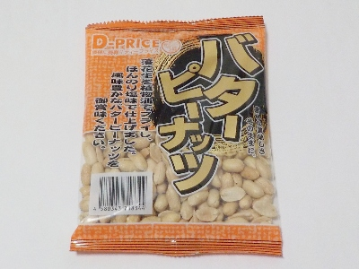
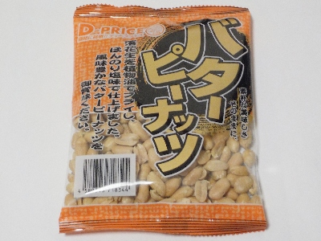
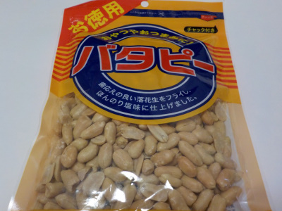
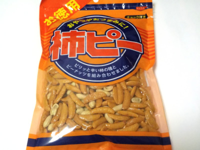
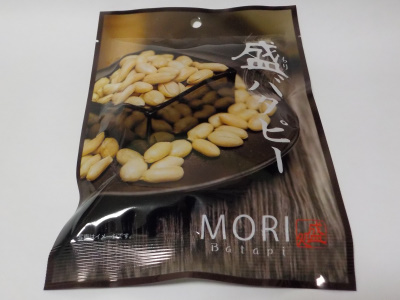

いこいのバターピーナッツは安くていいな。
2025/01/30

130グラムで98円プラス税です。
物価高ですが、いつまでこの価格で販売するんだろう？
安くていい商品ですが、ちょっと表面の植物油の味が気になると思いました。
愛知県名古屋市西区比良3丁目468番
2025/01/30

130グラムで98円プラス税です。
物価高ですが、いつまでこの価格で販売するんだろう？
安くていい商品ですが、ちょっと表面の植物油の味が気になると思いました。
2024/05/01

130グラム入っていて、とても安い値段で販売していました。チャックが付いていないので保存がしにくですが、安いので気にしません。
パッケージに「素朴な美味しさそのままに」と書いてありますが、まさにそんな感じだと思いました。ピーナッツ自体も味付けも淡白です。
素朴が物足りないと思ったら、調味料をプラスして食べるといいかもしれません。
2023/08/16

塩味少なめのバタピーです。油も少ないのでバタピーってより落花生っぽいです。
ヘルシーですね。
今まで気にしたことなかったですが、バタピーはバター使ってないんですね。バター使ってバタピー作ったらどんな味になるんだろう？って思いました。
家で収獲したピーナッツで作ってみようかと思いましたが、バタピーの魅力は気軽に買って食べれることなので、そんなことはしない事にしました。
2023/07/28

230グラム入ったお徳用柿ピーです。
この柿ピーはあまり辛くないので食べやすいです。なので飲み物がなくてもバリバリ沢山食べれました。
沢山食べるので、満足感がありました。
おやつに向いてると思いました。
2023/05/26

硬めの食感が噛んでで気持ちいピーナッツでした。塩分は普通かな。
このバタピーは100gあたり644kcalなので、この商品一袋110gで708kcalです。
この商品に限ったことではないですが、お酒のおつまみで食べ過ぎないようにしようと思いました。